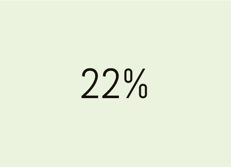
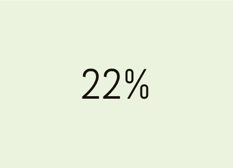

The task at hand was to design a cloud storage platform that catered to an untapped market. In an already saturated cloud storage ecosystem, the only way to find a unique angle would be to ask the users themselves. The viable solution resulted in the creation of FileWeave, a one stop shop for all your various cloud storage needs, with enhanced organization and social collaboration.

UX Research
Branding
Visual Design
Protoyping

User Surveys
Personas
Competitive Analysis
Brand Identity
User Stories & Flows
Wire-Frames
User Testing
Visual Design

Sketch
Invision
Usability Hub
The research unveiled three major issues that users were having with their current cloud storage solution...
(1) having to use more than one platform
(2) poor organization, and
(3) users wanting to expand their platform socially.
From this feedback the problem was identified: between work, family, and your personal files, it’s easy to get disorganized. When you’re working on multiple platforms to store and share personal and professional life documents, streamlined workflow is inhibited. Moving forward, we needed to consolidate competitor platforms functionalities, improve the organization and expand to the users social networks in order to reach the untapped market the client was looking for.
An app for all types of file storage (docs, photos, links, spreadsheets etc.) with advanced social sharing abilities, allowing users to post documents, and download documents from other users. Last but not least, advanced organization, with the capability to make overarching folders that function as separate interfaces within one account.
First off was testing the client’s, and my own assumptions about cloud storage user needs and frustrations. I deployed an online survey using google forms to gain insight into user motivation, behavior, preferences and dislikes.
On top of gaining insight into the mind of the user, at the client’s suggestion, I asked specific questions about how the user feels about potential features concerning collaboration and social functions.
After the survey results were analyzed, I was able to take that information and create user personas to key in on user needs and frustrations as I designed FileWeave.

Once I had narrowed down the problem through the first round of research, I was ready to take a look into the competition. I conducted a SWOT analysis to learn more about the ecosystem that FileWeave would be entering. Here are some of the major takeaways gleaned from the results:

Google Drive is a known favorite of most cloud storage users. Though Google Drive markets itself as a platform that is all inclusive, most users take notes and store photos elsewhere. On the outside, Google Drive looks as if it’s UI is simple and easy to use, but due to the bloated feel of the application, users are deterred from maximizing it’s functionality.
Dropbox positions itself as a backup and file sharing platform, centered around team collaboration and document storage. Dropbox is built for productivity as opposed to simply storage. Overall, Dropbox’s intuitive interface and organizational structure has a leg up on Google Drive, but is lacking the range of functions that Drive offers.
Tresorit is a Swiss made platform, that offers top of the line security encryption. Positions itself as a backup cloud storage site. Different than Drive and Dropbox, Tresorit is purely a content storage tool. The major downfall of Tresorit is the lack of organizational abilities once the data has been uploaded. Content can’t be reorganized from the dashboard itself, which has resulted in a major pinpoint for users.
After creating the personas, I created uesr stories for new and returning users to determine what tasks were deemed as high importance, in order to decide what to include in the MVP.
I created user flows to ensure the information was organized in a way that was intuitive. The high and medium user story tasks were turned into flows to build a path to creating the solution as an MVP.
I created user flows to ensure the information was organized in a way that was intuitive. The high and medium user story tasks were turned into flows to build a path to creating the solution as an MVP.
FileWeave is built for users with different motives, so my goal was to create a brand that is appealing to the weightless optimist, and the secure and stable pragmatist. When you bridge those two user characteristics you create a weave: something fun, stable, secure to enjoy and trust.
The name FileWeave emerged through exploring the meaning and intent behind the concept of a cloud storage platform. After exploring many related concepts, I was lead to the word, “weave.” A concept that evoked the ideas of security and stability while simple, and visually pleasing.
As for the logo, I tried to illustrate the concept of a Weave, and after many iterations, I came upon one that I felt accurately represented the concept of the brand. The logo mark was critical in defining the brand identity.
The color palette for FileWeave was to be based in blues and greens to convey a sense of confidence and strength.
For typography, I wanted to keep everything as simple as possible while still having a unique look. Signika was used for the logo font, and Monserrat and Source Sans Pro for type within the bulk of the design.
I began the visual design process by sketching, and then turned theminto digital wireframes on Sketch.

I sketched out the wireframe on paper, then transferred the wireframes to sketch, where I was able to create a clickable prototype for usability testing. After multiple rounds of testing, I had a final set of wireframes to use moving forward. Here’s an example of the dashboard sketch and wireframe.

Three rounds of user testing resulted in three iterations of the dashboard. Since this was my first major project, and my journey on the learning curve is evident. My user experience intuition, skills and eye were evolving along with my prototype as you can see in the changes in the iterations below.
The first round of user testing was performed in wireframes, and shed a blaring light on the deficiencies of the prototype so far. Here were some of the findings:
(1)The use cases of the plus button and upload button was confusing to users, so the tasks were split up into three clearly labeled buttons.
(2)Users were unsure about the functions of the menu bar, so the menu bar was scrapped, and a dropdown menu was created to make it apparent you are manipulating that specific document.
(3)Users thought the two upload buttons had different functionalities, so the upload button was written out, and the drag and drop icon was also written out.
(4)Users were very unsure how to create new files and organize their content, so a new organizational side navigation panel was created.
(5)A major critique of this iteration was the lack of effective use of space. By having this feed bar to the right, users are now able to keep up to date with their feed without switching screens, optimizing efficiency, and promoting constant interactions with all features of FIleWeave.
The second round of user testing feedback resulted in the following: (1)The logo blended into the background, this prompted a color palette change, and a logo redesign seen below in user testing results.
(2)The dropdown menu was still being overlooked, so the individual document functions were spelled out on the individual file.
(3)Users were confused about how FileWeave facilitated advanced organization. Here three different screen views were created, where you can upload files directly to these different realms of your life, to avoid having to organize different files, these overarching umbrella files offer thoughtless organization at your fingertips.
(4)Yet again, users found it confusing that there were two upload buttons, so the button itself was eliminated, and the folder upload icon was created to clearly differentiate and identify the use.

User response to the landing page showed that the landing page needed consistent font, line height, and spacing in order to increase readability. Users also pointed out that the hero photo did not signify brand relevance. This feedback lead to the evolution seen below.

I conducted a preference test to see if the new logo would recieve positive feedback from the user, and as expected, users preferred the new, more modern iteration over the original.
 
 


If you'd like to see the full prototype, click here.
Going through the empathetic process of research and design, I was able to successfully apply user feedback to discover direction for creating an effective solution to the problem at hand. I also began developing a mindful practice of continuously attempting to eliminate my own bias in the design and research process. There were many points in this process where I had to remind myself that I am not designing this product for myself, but for my user. This practice has now become a habit that will be critical to my success as I continue to develop as a UX Designer.
Another big takeaway from this process was that you should always back your usability testing up with more usability testing. Taking the results from an individual user test doesn't necessarily mean that is the best design change for a majority of users. Aggregating results and communicating with the design community will always produce the best results. I made the most strides in my learning when I received the most critical feedback from fellow designers. Keeping my bias and check, listening to my users and design community have helped me design with confidence, knowing that these decisions were not created by my own bias, but by real people that have the problem and know the solution.
ALL WORK © SYDNEY STUBBS 2018